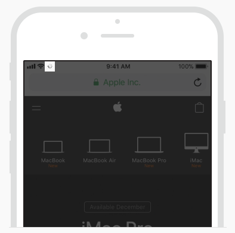

TIL 5: Network Activity Indicator가 사라지다
TL;DR
- 이제
Network Activity Indicator를 보여줄 필요가 없다.
Network Activity Indicator란? 🤔
iOS 앱에서 네트워크 연결이 길어지는 경우, Network Activity Indicator라는 네트워크 연결중 표시를 위한 UI가 있다.
 상태바 좌측에서 확인할 수 있다.
이것을 본 사람도 있고 아닌 사람도 있을 것이다. 왜냐하면, 화면 모양에 따라 보여지는 경우가 있고 아닌 경우도 있기 때문이다. 또한, 앱 개발자가 이것을 보여지도록 처리했는지에 따라 앱을 사용하는 내내 볼 수도 있고 못 볼 수도 있다. 이것은 순전히 개발자에게 달려있다.
보여 줄 수 있는 화면이라면, 보여주는 것이 사용자를 위한 배려라 생각들지 않는가?
다음과 같이 애플의 Human Interface Guidelines(이하 HIG) 문서의
Progress Indicators 내용에 따르면,
Network Activity Indicator는 네트워크 연결이 길어지는 경우에 보여주고,
통신이 빠른 동작에는 보여주지 말라는 말이 있다.
Show this indicator only for network operations lasting more than a few seconds.
Don’t display the indicator for quick network operations because it’s likely to disappear before anyone notices its presence or realizes what it’s meant to communicate.
앱을 만들 때마다 이것을 신경 쓰는 것은 매우 귀찮은 일이 될 수도 있다.
구현 할지 말지 더 이상 신경쓰지 않아도 된다! 😏
동일한 페이지의 바로 윗 부분에 “iOS 13 이상이나 edge-to-edge 디스플레이의 기기에서는 더 이상 해당 UI를 제공하지 않는다”는 내용도 있다.
The network activity indicator is deprecated in iOS 13 and on devices with edge-to-edge displays.
대체하는 API가 나온 것이 아닌 완전한 Deprecated이다.
앞으로 애플에서도 해당 UI에 대해 생각하지 않겠다는 것이다.
그 대신 자주 사용하는 로딩중 표시를 위한 UI인 Activity Indicator를 사용하면 된다.
사라질 기능이니 앞으로 새로 개발하거나 개선하는 앱에서는 굳이 Network Activity Indicator를 사용하지 않아도 된다.
아주 미세한 짐 하나를 덜어낸 것 같다. 🙄